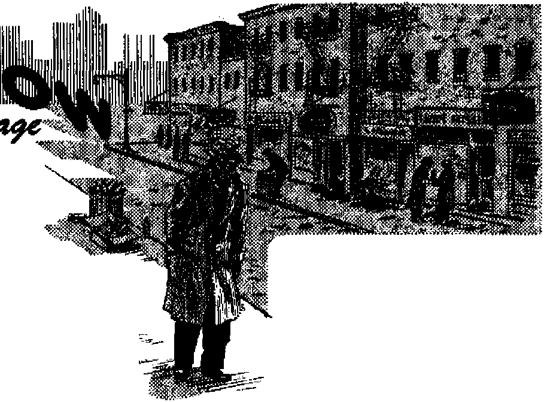

Canada’s Supreme Court so rules in reversing itself
That is SOME question!
Are they disciples of scientific fact? Or babblers of sectarian bigotry?
How Christian Love Works Formula for unity in a divided world
MARCH 8, 1951 semimonthly
THE MISSION OF THIS JOURNAL
News sources that ore Able to keep yc>u awake to th® vital issues of our times must be unfettered by censorship and selfish Interests. “Awake F* has no fetters. It recognises facts, faces facte, te free to publish facte. It is not bound by political ambitions ©r obligati© nB; jf Is unhampered by advertisers whose toes must not be trodden on; ft te unprejudiced by traditional creeds. This journal keeps itself free that it may speak freely to you. But it does not abus£ its freedom. It maintains Integrity to truth.
“Awake I" uses the regular news channels, but te not dependent ©n them. Ite own correspondents are on all continents, in scores of nations. From the four comers of the earth their uncensored, on* the - scenes reports come to you through these columns. This journal’s viewpoint is not narrow, but is international. It is read In many nations, in many languages, by persons of all ages. Through its pages many fields of knowledge pass in review—government, commerce, religion, history, geography, science, social conditions, natural wonders—why, its cover' age is as broad as the earth and as high as the heavens.
"Awake F* pledges itself to righteous principles, to exposing hidden foes and subtle dangers, to championing freedom for all, to comforting mourners and strengthening those disheartened by the failures of a delinquent world, reflecting sure hope for the establishment of a right' eoua NeW World.
Get acquainted with "Awake f” Keep awake by reading “Awakei”
Published Semimonthly By WATCHTOWER BIHLlE and tract SOCIETY, INC.
117 Adams 'Street
N. H- Kn<jbr> President
Printing ttils issue; 870,000
LattKMts In whleh this li psbtlihei;
bfemlDwnthly—Afrikaans, English, FlnnM, Qermui, Spanish. Monthly—Danish, Freo*, Orsdf. Porttjffiiese, Siredish, U*ralni#fi, Offices Yearly subscription BaU
Anterita, U.S., H7 Adanu St, Brooklyn 1, N.Y, *1
Arttr*ll«, 11 Bamford Bd., WtraWflfld. N.0.W. 8S
Canada* 40 Irwin Ave., Tunjutc 5, Ontario $1
Iktiw, LwiiiiKv W. ‘1 la ^nth AfrfM. 623 Boston Holm*, Cipe Town 7a
Knl«Td as second-claw matter at Brootiyn, N. ¥.
Brooklyn 1, N. Y„ U- B. A.
Grant suites, Secretary
Five cents a copy
Romittutts should be sent to office la your conn, try in cotniiuanca with resiilationB to auirajite? safe dtilrecy uf money. Bemlttancea ere Bccepted Brooklyn from (MiintrfM where no office & locattd, by international money order only. Subscrlptl^ rates in (Afferent countries are here stated in local currency. Notice *f onlrutlM (with renewal blink) is sebt at lean two tesiHi before subscription tx-plrea. CMnin of aiirai whan mt to our office tftetjikic cine TOonfn. Senii your old sa well as jutatoept
Act of Wirch 3, 1&79. Printed In U 3. A.
CONTENTS
|
Jehovah’s Witnesses Not Seditious |
3 |
Skid Row: City of Bottle and Bondage |
17 |
|
An Unprecedented Reversal |
‘ 4 |
Behind the Scenes |
18 |
|
Judges Bury Decayed Law |
6 |
Wherein Lies the Hope? |
19 |
|
Witnesses Do Not Incite Violence |
7 |
Latin Cows Get the “Coffee Habit" |
20 |
|
Rejoice in This New Day of Freedom! |
7 |
National Council of Churches Formed |
21 |
|
TV or Not TV—That Is SOME Question! |
8 |
Structure of the Council |
22 |
|
‘Life Through Hose-colored Television’ |
9 |
Why Not Join the N.C.C.? |
24 |
|
Are Evolutionists Scientific? Or |
'‘Your Word Is Truth" | ||
|
Are They Sectarian? |
12 |
How Christian Love Works |
25 |
|
Evolution Parallels False Religions |
13 |
Watching the World |
29 |
“Now it is high time to awake.—Romans 13:11
Volume XXXII _ Brooklyn, N. Y? March 8, 1951________________ ... Numbar 5
JEHOVAH’S WITNESSES NOT SEDITIOUS
Canada's Supreme Court So Rules in Reversing Itself
By “Awokel" correspondent in Canada
FREEDOM and justice won a great victory on December 18, 1950! Canada’s Supreme Court reversed itself in an unprecedented case and as a result all lovers of what is right, just and true are rejoicing. For two days radio stations across the country made hourly announcements of the stupendous event. Newspapers throughout the land told how the wicked conspiracy, engineered by Quebec’s Catholic Hierarchy and the attorney general of that province in an effort to stifle freedom of worship, had been defeated. Under the headline “A Free Land Made Freer” the Toronto Star, for example, declared: “Not all of freedom’s victories are won on the battlefield or in the legislative hall. Some are created in the solitude and contemplation of the judge’s chamber. The Supreme Court of Canada, in acquitting a member of the Jehovah’s witnesses sect of a charge of seditious libel, has upheld the democratic right of free expression.” Read now a blow-by-blow account of this thrilling four-year fight which finally climaxed in a Supreme Court somersault.
This history-making decision by Canada’s highest tribunal revolved around a leaflet entitled “Quebec’s Burning Hate for God and Christ and Freedom Is the Shame of All Canada”. It was published and distributed throughout Canada in 1946 by Jehovah’s witnesses as a protest against the bitter persecution suffered by them for many years in that province. It told abopt false arrests by the hundreds, jailings, beatings, mob violence and other outrages against sincere Christians who were preaching the gospel of God’s kingdom as commanded by the Most High God. The attorney general of Quebec, however, took exception to the protest and laid against some of the distributors the atrocious criminal charge of publishing a seditious and defamatory libel.
The case against one of these distributors, Aime Boucher, began at St. Joseph de Beauce, Quebec, in December, 1946, with a preliminary hearing. Next came the trial held in an atmosphere seething with hatred and suspicion, before French Catholic Judge Alfred Savard and a Catholic jury. The judge was most unfair and ruled with a high hand, interfering with the defense at every turn. Constantly he appealed to the jury’s religious prejudices against Jehovah’s witnesses to get a conviction. In fact, the judge’s conduct was so completely unlawful it really assisted the defendant in getting the case reviewed by the Supreme Court. Confusion and bigotry, which darkened and hid the real issue during the trial, were pierced with some rays of light and sanity when Chief Justice Letourneau and Mr. Justice Galipeault
of the appellate court in Quebec city condemned the trial judge. Through this dissent alone the case was transferred from Quebec city to the Supreme Court in Ottawa.
An Unprecedented Reversal
The conflict was presented to five judges of the Supreme Court during the summer of 1949, In the autumn of that year they reached a decision that split the court three to two against Jehovah’s witnesses —Chief Justice Rmfret and Justices Tas-chereau and Kerwin against, and Justices Rand and Estey in favor. Application was made asking for a reargument of the case. Then a very rare and unusual thing happened: the request was granted!
Meantime, while the application for reargument was pending, the number of judges in the Supreme Court was increased to nine: Justices Locke, Kellock, Fauteux and Cartwright heard the case along with the original five judges. This meant that if three of these four new members could be persuaded to join Rand and Estey then a majority of five to four in favor of Jehovah’s witnesses could be obtained. However, when the decision was rendered in December, 1950, it showed that of the new justices only two, Locke and Kellock, had joined Rand and Estey in favor of acquittal. Nevertheless, Jehovah’s witnesses won the case by a majority of five to four!
Now, hbw was that possible? By the startling and unprecedented, but courageous, move of the only Irish Roman Catholic member of the court, Mr. Justice Ettrick Kerwin. He changed his mind and reversed himself, thereby completely turning the Supreme Court around. The weight of his single vote thrown on the scales of justice caused the court to measure out justice and liberty to a despised minority residing in the hotbed of religious hatred, Quebec!
Mr. Justice Kerwin discharged his duty by looking at the case through uncolored, unbiased and unprejudiced eyes. He did not decide according to religious prejudice. He did not sit as a judge of a court of inquisition. He chose to take a position alongside the notable late Justice Frank Murphy of the United States Supreme Court, who was also an Irish Roman Catholic, yet one who often ruled in favor of Jehovah’s witnesses, even if at times he had to stand alone. Thus, Justice Kerwin, like Frank Murphy in the famous flag salute case, demonstrated his integrity, impartiality and fearlessness by admitting his former mistake and openly correcting it. He did not tie his hand to the error of the past. He followed the principle announced by the United States Supreme Court: “When convinced of former error, this court has never felt constrained to follow precedent.”
So, from a defeat by a three-to-two vote on the first hearing, Jehovah’s witnesses, with God’s help, rose to receive a five-to-four victory against the enemies of truth, justice and righteousness in Quebec! To more fully appreciate what a great victory this was, not only for a small minority but also for all freedom-loving Canadians, take a look at the age-old shackles of oppression which were broken and discarded by this decision.
Old Sedition Law, Moldy and Odious
The charge of sedition has been dishonorably used by tyrants throughout history. For centuries dictatorial rulers have employed it to suppress people who speak unpalatable truths. For over three centuries the vague, dragnet accusation of sedition has, for many parts of the British Commonwealth, been a monster of oppression capable of being used by rulers to stifle freedom of expression. Often, as in Canada, it has remained dormant as a con-
stant threat capable of being awakened and used in times of stress when freedom □f speech and press are needed most.
It was so in this case. The attorney general and the judges of Quebec dug around in medieval catacombs until they found this antiquated and ugly legal machine on which they hoped to rack and ruin Jehovah’s witnesses. An ancient sedition law from the Court of Star Chamber declared that any writing which “has a tendency to cause disaffection or stir up ill will and hostility between different classes of His Majesty’s subjects” is a seditious writing. Based on such an outdated definition the attorney general contended that Jehovah’s witnesses, even though they spoke the plain truth, were guilty of sedition because they stirred up ill will and hostility in French Catholic Quebec, as well as among Canadians in general inasmuch as the witnesses told the rest of Canada how they were being persecuted in Quebec.
What a legal mountain, this centuries-old definition of sedition supported by long-respected authorities! It stood as a barrier preventing freedom of worship and speech and barring persecuted Christians from even protesting against the inquisitorial treatment to which they were subjected. But it was unreasonable and altogether inconsistent that people in a twentieth-century democracy should be obliged to submit unmurmuringly to such terrible abuses! High time it was to bring the law out of the moldy Middle Ages and have these ancient anachronisms, which destroy the present-day concept of liberty of speech, press and worship, overruled.
Counsel for Jehovah’s witnesses therefore determined to take a bold course, dig deep into the law and challenge all these ancient authorities no matter how revered. The law of Canada, they contended, should be more liberal than the medieval law expounded by the Court of Star Chamber and Quebec’s prime minister Duplessis. The archaic and cruel definition, they contended, ought not be accepted by the courts of Canada, since it resulted in persecution and suppression of all freedom of expression. While Quebec’s attorney general contended that it was seditious to tell the truth if it held up Quebec's officials and priests to contempt and ridicule because of their wrongful acts, Jehovah’s witnesses on the other hand contended that if that were so then a man could not even speak the truth about a group of gangsters who were oppressing the people.
To demonstrate the correctness of this proposition it became necessary for the witnesses’ counsel to go into the basic theory of modern British constitutional government. An argument never before presented in any British appellate court was made. It was pointed out that the ancient and odious sedition law was a relic of the days when kings were believed to rule by divine right. In those medieval times the king and his ministers held sovereign power, while the people had no voice in operations of the state. To quote directly, counsel for Jehovah’s witnesses told the court:
“Hundred-year-old legal precedents are now completely inapplicable in defining the offence of seditious libel. This court must define the liberties of the modem citizen and say where the collar of the police-state begins. Precedents are so old that they are based on the premise that sovereignty rests in the king’s ministers and not on the people. Nowadays the ruling authorities are taken to be the servants of the people and the dissenters have a right and duty to address themselves to the sovereign people. The doctrine of divine right of kings may die hard, but it certainly has no place in this country today and it is the duty of this court to finally lay it to rest. Bring the law out of
the Dark Ag^s and into the twentieth century!"—Toronto Star.
Judges Bury Decayed Law
A majority of the judges of the Supreme Court refused to swallow the poisonous potion prepared for them by the attorney general Instead, they courageously and commendably adopted the bold arguments submitted to them by Jehovah’s witnesses, that the ancient rule of the Court of Star Chamber be put back, once more and for all times* into the grave whence it had been exhumed.
Mr, Justice Kellock was one of the majority that joined hands in burying the factitious argument of the attorney general that it is seditious to raise ltill-will and hostility between different classes of His Majesty’s subjects”. Wrote Kellock: “It cannot be that words which, for example, are intended to create ill-will even to the extent of violence between any two of the innumerable groups into which society is divided, can, without more, be seditious. In my opinion, to render the intention seditious, there must be an intention to incite to violence or resistance or defiance for the purpose of disturbing constituted authority.” Mr. Justice Locke agreed on this point, saying: “I concur in the opinion of my brother Kellock” that it is seditious only if there is an intention to incite to violence against constituted authority. However, “the statements complained of in the present matter cannot be said to evidence any such intention,” declared Locke.
Although the constitutional principle of the shift of sovereignty from the king to the people has previously been discussed in textbooks, this decision, prompted by the insistence of Jehovah’s witnesses, marks the first time it has been actually written into the law by the courts as a basis for broadening the rights of the people.
Mr. Justice Rand agreed with counsel for Jehovah’s witnesses and led the majority of the justices in this momentous decision. He showed how times have changed in the last two centuries. In olden days, Rand pointed out, when the governors of society were thought to be superior beings, exercising a divine mandate, and by whom laws, institutions and administrations were given to mankind, any criticism or censure of them was considered seditious libel. But constitutional conceptions of today, continued Rand, “have necessitated a modification of the legal view of public criticism; and the administrators of what we call democratic government have come to be looked upon as servants; bound to carry out their duties accountably to the public.” Hence, Rand’s conclusion: the new conception of government calls for “new jural conclusions”.
Speaking more specifically, Mr. Justice Locke says: “It is the right of His Majesty’s subjects to freely criticize the manner in which the government of the country is carried on, the conduct of those administering the affairs of government and the manner in which justice is administered.” The existence of the right of public discussion, he went on to say, is wholly inconsistent with a rule of law that holds that public officials are immune from criticism on the ground that criticism of them is a reflection upon the government. And in burying the dead idea that ‘the king can do no wrong', Justice Locke threw on its grave another shovelful of legal reasoning, saying: “It is very much too late in the day to say that ‘if a publication be calculated to alienate the affections of the people by bringing the government into dis-esteem, whether the expedient be by ridicule or obloquy1 it is a crime.”
So now the Supreme Court has given us a new and modern definition of the offense of sedition, and it is very clearly and suc-dnctly stated by Mr. Justice Kerwin, the judge who in reversing himself also reversed the Canadian Supreme Court. He states: “The intention on the part of the accused which is necessary to constitute seditious libel must be to incite the people to violence against the constituted authority or to create a public disturbance or disorder against such authority. . . . An intention to bring the administration of justice into hatred or contempt or exert disaffection against it is not seditious unless there is also the intention to incite people to violence against it.”
Thus, with the offense defined making it necessary to show incitation to violence, and the record establishing the fact that Jehovah’s witnesses had not incited anyone to violence, the conclusion of the court that an acquittal must result and a dismissal of the prosecution ought to follow was the necessary consequence. Victory therefore came as a result of molding a new definition for the Canadian law of sedition!
Witnesses Do Not Incite Violence
The attorney general of Quebec knew that he could not establish that God’s peace-loving witnesses were’ guilty of inciting others to do violence against the priests and officials, so he resorted to an extreme, specious piece of sophistry in his effort to wheedle and cajole the Supreme Court into sustaining the conviction. He told the court that although they had not incited violence against others, nevertheless Jehovah’s witnesses should be convicted of sedition because Catholic citizens of the province might be angered and attack, not the priests, but the witnesses. Such danger, he contended, made the witnesses guilty of fomenting violence.
But this point, too, the justices rejected. "In my opinion,” says Mr. Justice Kellock, "it cannot fairly be said that the pamphlet [Quebec’s Burning Hate,, distributed by the witnesses] is open to any such construction.” Rather than a spurious paper that sought to stir up violence, the justices characterized it as lawful and fair comment. Rather than a paper designed to cause seditious acts of violence, they found it to be "a burning protest and expression of deep indignation” which concluded with "an earnest petition to the public opinion of the province to extend to the witnesses of Jehovah as a minority the protection of impartial laws”, to quote Mr. Justice Rand.
It is utterly fantastic to assert that the leaflet in any way incited to violence, for, as pointed out by Justice Rand, "it consisted first of an invocation to calmness and reason in appraising the matters to be dealt with in support of the heading; then of general references to vindictive persecution accorded in Quebec as brethren in Christ; a detailed narrative of specific incidents of persecution; and a concluding appeal to the people of the province, in protest against mob rule and gestapo tactics, that, through the study of God’s Word and obedience to its commands, there might be brought about ‘a bounteous crop of the good fruit of love for Him and Christ and human freedom*.” The other judges also made commendable appraisal of this leaflet.
Rejoice in This New Day of Freedom!
As defined by the Supreme Court the law of sedition can now be used only to prosecute where there is incitement to violence against the government. It is no longer a threat, against minorities who righteously object to persecution. This modernization of the law is important, not only here in Canada, but also in other parts of the British Commonwealth of Nations, most of whom have drawn their definition of seditious libel from the older
(Continued on page 27)
caters worry about getting substantial time away from commercial programs, Comes
now color TV and the worry comes out in beautiful rainbow hues—but
HAD the “Connecticut
Yankee” of story fame suddenly sprung a television set on his hosts while visiting King Arthur’s medieval court, it could scarce
ly have taken that ancient age by a storm any greater than that by which it has this twentieth century, in the past few years of which it has matured from cradle to giant
Passing time only produces more ways of using and improving television. A complicated communication device called "Ultrafax” combines television with highspeed photography, and can transmit up to one million words a minute. The 1,047-page text of Gone with the Wind was transmitted In two minutes twenty-one seconds. Through stratovision telecasts are relayed by fully equipped airplanes, and phonevision shoots full-length moving pictures into the living room via your telephone line.
Spurred by TV’s magic popularity the eager telemagnates have hastened to predict for their prodigy a globe-girdling future. David Sarnoff, president of the Radio Corporation of America, appoints television to the role of world unifier, a force capable of hurdling man-made “curtains”, iron or otherwise.
But the prodigy may prove to have a split personality, causing as much anxiety as ambition. Parents and teachers worry about today's “televiz-kids”, religious priests worry over those wishing to “attend” mass from the living room, edu-it is still worry. The dealer worries about when the color sets will be on the market and if he will be caught with a surplus of black-and-white sets. The owner worries as |o whether his old set will become completely obsolete. And the prospective buyer, surrounded by eager salesmen and advertisements extolling the glories of television, sits staring at the empty comer of his living room murmuring, ‘TV or not TV.’
TV’s Troubles and Triumphs
Parents and teachers have become belatedly aroused over the newest childhood disease, "telephobia,” “telematic fever” or just “virus video”—call it what you will. Stamford Connecticut’s Burdick Junior High School found by survey that fifty per cent of its students had television sets in their own homes and averaged 3.86 hours a day, twenty-seven hours a week, at the screen. This all but matched the twentyseven hours fifty-five minutes Burdick students spend in class weekly. A New Jersey second grade teacher complained that twenty-one of her twenty-two pupils lived in television homes and were irritable in class from insufficient outdoor exercise. She declared herself incapable of competing with “Hopalong Cassidy”, and
felt that the class was ever expecting her to stage a song and dance act. Last seen, she was headed for Nevada, a mountainous sanctuary of very poor television reception.
But youthful eyes are exposed to much more than "Hopalong Cassidy", Parents have decried the crime shows that seemingly take pride in little more than multiplying corpse production. In a single week, the Southern California Association for Better Radio and Television was served ninety-one murders plus assorted kidnap-ings, suicides, homicidal explosions, assaults, arson, burglaries and jailbreaks. Violence of another sort has broken out on the reception end of the screen where one wrestling addict, no doubt carried away by the match, pulled his wife from the couch and put a toe hold on her. Domestic quarrels over choice of programs have been frequent, and one case is cited where such dissension drove the wife to stop cooking, probably as drastic a reaction as television will ever produce!
Dreading the handwriting on the wall, prominent educators are holding out for substantial TV time for educational purposes. Fearing the worst, Dr. Daniel L. Marsh, president of Boston University, couched a message of doom in a baccalaureate sermon last June, saying: “If the television craze continues with the present level of programs, we are destined to have a nation of morons.” This reminds that the University of Michigan in August, 1950, announced plans to inaugurate televised home study classes in history, fine arts, modern living, laboratory research, etc. Medicaf science is making use of televising “on-the-scenes" action from the surgery for students and doctors.
Further television support has come from Protestant and Catholic religious organizations, A New York Presbyterian church installed TV in an effort to detour its youth from watching it in bars. Catholic masses have been televised for over three years to the enthusiastic approval of the pope. However, the Catholic Confraternity of Christian Doctrine found it necessary to stipulate that one’s bodily presence was necessary to fulfill his obligations to the church, thus ruling out mass "attendance” by way of the living room armchair.
Approval of a more unique nature has come from Louden-Knickerbocker Hall, a private sanitarium in Amityville, New York, which has employed television "as a form of occupational therapy to take the patients’ minds off themselves”. However, this is tempered by a report from an old ladies’ home in Yaphank, New York, where a nurse nightly wears a ragged edge on her patience trying to coax the gentle, white-haired ladies from their “ringside” seats of their favorite program—wrestling. Above the noise’s pleas the ladies chant battle cries to the gladiators.
‘Life Through Rose-colored Television*
Ever since the day television became a reality the anxious public has anticipated its production in color. From the wild scramble caused by competitors for the universally adopted system, methods devised by the Columbia Broadcasting System (CBS) and the Radio Corporation of America (RCA) emerged as the tap rivals. The Federal Communications Commission on October 11, 1950, approved the CBS plan as the more satisfactory, opening the door for a flood of protests from RCA and its allies,
To the courts went RCA for relief. A Chicago Federal Court responded with a decision favoring CBS, but for the purpose of speeding the case on to the U. S. Supreme Court. In the meantime, while all the fur was flying in the main arena, Forrest Killy, a Roselle, New Jersey, electrician threatened to steal the show from
the sidelines by calmly converting his own TV set to color by means of a homemade, self-installed color wheel amounting to a grand total investment of $4.30.
A rose-colored tint of a different sort has come to television through its ads, some of which have gone to the outermost reaches of advertising extravagance. The non-owners received more of a ‘black and blue tint* from the American Television Dealers and Manufacturers Association by way of their nation-wide “plea*’ on behalf of “televisionless” children. Therein the no-television American learned that his wan-faced, sad-eyed son and daughter were wan-faced and sad-eyed because suddenly rendered social outcasts from their “old gangs” now composed of children whose parents have TV sets! Accompanying the ad was a testimonial by child guidance authority Angelo Patri (who reportedly withdrew his support later), stating:
"Youngsters today need television for their morale as much as they need fresh air and sunshine ... It is practically impossible for boys and girls to ‘hold their own’ with friends and schoolmates unless television is available to them ... To have television is to be ‘cock o* the walk’. Not to have it, well, that is unthinkable.”
Among the voices shouting stinging and well-deserved condemnation at^such low-grade chicanery was The Christian Century, which, in its December 6, 1950, issue, declared:
“The TV manufacturers and dealers are in a terrible fix. After strong-arming the Federal Communications Commission into permitting a runaway market in black-and-white sets, although they knew color TV was Just around the comer, they have now been thrown into panic by the actual arrival of color. The manufacturers* warehouses are full of the now outdated sets. Dealers are loaded up with them, anticipating a Christmas killing. And suddenly, the press states, the public has stopped buying. It wants color. In this sad situation, something had to be done. The result was this effort to make parents buy the old-fashioned sets because otherwise their children would be social pariahs. It was a horrible result; no question about that. But it also shows the lengths to which men will go under the prod of economic desperation.”
Room for Racketeers
Television has not grown so fast nor consumed so much space as to leave out the ever-eager racketeer. In the single city of New York, the Better Business Bureau was deluged with 2,312 cries of anguish from homes that had been pillaged by the merciless telecrats during one seven-month period of 1950. A Boston ipan selected an attractive new set in the window of a store, only to be presented with a battle-scarred substitute identical with his neighbor’s two-year-old model on delivery. A New York couple wound up with their apartment a maze of wires, antennas and “everything back” guarantees from an outfit of frauds that returned nothing but its promises, and found themselves the proud possessors of a set capable of receiving one whole channel!
The writer in Pageant magazine, December, 1950, who cited these and countless similar outrages, advocates united action by citizens through agencies like the Better Business Bureau to put a stop to such practices. Solutions to the other problems may not prove so easy. Yet bad programs are thieves of time and can often prove contributors to moral delinquency. Educators will be faced with the task of convincing a light and vain world that their message is more urgent than that of slapstick comedy. So again, what about the children, today’s "televiz-klds”?
Does it seem foreign to all reason to suggest that the parent, not the television set, still has the word of authority over the child? As with any form of entertainment, the participant will either own the television set or it will own him. In the case of children, the parent must answer this question for them. Remember, if left to the set to decide, it would turn you on and leave you on many hours during the day. With children it can easily do just this if given a free hand. If the parent buys the set, then permits this to happen, he cannot blairie the set for his own failure.
Is the example too hard to set? In Milwaukee, Wisconsin, surveys reveal that that city’s many TV “practitioners” in 90 per cent of the cases spend an average of three hours a day at their sets. This is twenty-one hours a week or fifty-two waking days a year! True, a national advertising executive quoted In Pageant for October, 1950, referred to the later hours kept by television viewers as a means of extending the productive hours of the day, hence the productive capacity of the nation. However, are there that many TV programs deserving of the “productive” label? Does this mean to include the “Hopalongs”, the comedians and the crime maniacs?
Fighting Back with Common Sense
If children are to be “productive” they require outdoor exercise. Also, they must take time to feed the mind through their schoolwork and other profitable study. They can profit themselves and the family by attendance to household tasks. If consecrated Christians, parents can ill-afford to forego family Bible study in company with the children. By the time all these things are taken care of and proper programs are selected, there will not be left a great surplus of time in which the video tube can devour its prey. If the parent cannot control his own child sufficiently to make feasible these common-sense measures, then he had better not buy the television set until the child is grown; or buy it and turn the child over to it for rearing. It is all just as simple as that.
Today's realization of the “critical times” forecast in the Bible as due to mark the “last days” of this world system proves too clearly that the old world hangs now on the brink of its finish. Drastic, yet nonetheless pointing directly at the current devilish attempts to corrupt the mind, was the statement by actor Sir Cedric Hard-wicke that he preferred the atom bomb to television. With bad television programs In mind, he opined that “it is better to be killed in an explosion than to have the human mind deteriorating in the home”.
True, this swings to an extreme and overlooks all of the much good, either actual or potential, within the grasp of television, But all of its praiseworthy qualities can never be given free reign by a selfish, dying, barrier-ridden world like this. Contrary to the enthusiastic executive cited earlier, television itself is powerless to remove the real barriers to world unity named by the inspired apostle at Galatians 5:19-21, including “strife, jealousy, fits of anger, contentions, divisions, sects”. The account continues to say that only the fruit of the exercise of God’s spirit can and will eliminate these things.
Ah, but in a new world guided by that spirit and free of crime, war and the countless evils television producers now see fit to project evidently because of popular demand, in such a world one might reasonably expect such inventions, perhaps improved a thousand times, to assist in uniting and educating the peoples. Not the possession of a television set, but access to knowledge concerning this impending new world is the factor capable of rendering one able to “hold his own” through the critical age now here.
•SCIENTIFIC?
1 • ri I •• ' • % • ' . •
SECTARIAN?
SCIENCE, as the word is generally understood by scientists themselves, refers to the body of facts concerning nature and natural laws. True scientists have great respect for facts, and when facts which can be established by experiment conflict with theory or accepted beliefs, no matter on whose authority the theory or belief might rest, the facts must prevail. In establishing facts, the scientific method requires that they be capable of demonstration by anyone, and that the results of an experiment do not depend upon what country the experimenter lives in, what his color or religion or language is, and
CHAftlES B.Etf.BWJM j
mill
Unscientific Approach to Evolution Study The theory of evolution of living things fails to measure up to the standard of scientific fact. The evolutionist begins with assumptions and assert tions that cannot be proved, and p to build up an elaborate body of arguments always bent toward the preconceived con elusion that he wishes to reach. The step in the argument fail to meet the test of scientific experiment. Ignoring stubborn facts, his judgment constantly colored by his prejudice in favor of the doctrine he
especially not upon his beliefs or desires.
The physical sciences, such as physics and chemistry, have been particularly successful in application of the scientific method to accumulate a great body of information about the universe we live in. On the other hand, in the so-called social sciences, such as psychology, sociology, and economics, relatively little of the great mass of ideas set forth can meet the test of scientific fact. No sharp distinction is drawn between fact and opinion. Even in the biological sciences, it is usually impossible to control all the complex factors of environment in order to perform an experiment, as that term would be understood by a chemist. Results vary so widely from one test to another that the conclusions to be drawn will often be
Has already accepted, the evolutionist continues to cast about for additional bits of evidence which he can twist to fit his theories, all the while repeating by rote the unproved arguments and assertions of his predecessors. The whole procedure, from beginning to end, is utterly unscientific.
Beginning students of evolution cannot fail to note the contrast between the attitude which is adopted toward evolution and that which prevails in the physical sciences. For instance, in developing the atomic theory, a good textbook will set forth calmly and dispassionately (why should it be otherwise?) the body of facts which lead up to the theory, facts which can be observed and established by anyone. Then, the theory is presented as offering a reasonable explanation of the
the subject of bitter debate.
facts. There is no browbeating, no attitude*
that you must believe this because all the great men believe it.
But evolution is not presented in this manner. The textbooks begin by stating that the great principle of organic evolution has been established by many scientists all over the world; that it is accepted by practically all scientists; that those who reject it as an unproved theory are either untrained in scientific thinking or do not understand biology. Then they proceed to deride the doctrine of “special creation*\ and the Bible in particular. They proceed to a discussion of the “proof of the fact of evolution”, and a eulogy of Charles Darwin as one of the greatest scientists of all time because of his “unanswerable demonstration that evolution is a historical fact**.
All this, mind you, comes before any of the evidence has been presented to the student. A deliberate effort is made to build up the strongest possible prejudice for the theory before any of the flimsy evidence is set forth. If this is scientific, why not begin the discussion of the atomic theory by talking about “the fact of atoms”, including a eulogy of John Dalton as a great scientist to have established the great principle of atomicity, and a list of the living great men who believe in atoms? It 'would be silly, and it is entirely unnecessary to present a truly scientific theory in this way. A theory in science is a working hypothesis which is useful for correlating facts and suggesting new Experiments. If it fails in the light of further knowledge, it is abandoned and a better explanation is sought. But the evolution theory is something to be defended fanatically against all opposition and contradictory evidence.
Evolution Parallels False Religions
The average evolutionist regards religion as a palliative for the ignorant, the weak-minded, the bigoted, narrow-minded sectarian. He would be quite indignant at me suggestion that he was a religious sectarian. But, in fact, is not the evolutionist one of the most intolerant of religionists? His creed is set up just as dogmatically as that in any other false religion; his belief is really a blind, unreasoning credulity. His faith goes back to the early fathers, who are regarded with an adoration very much akin to the reverence accorded the “saints” of some other religions.
He'worships his own mind and that of other scientists. He looks to science for the salvation of the human race. He is so bigoted that he regards anyone who dares disagree with his doctrines as ill-informed, unworthy of his condescension to argue with. And, like many other religionists, the evolutionists point to the near-universal acceptance of their creed as proof that they cannot be wrong. And their adherents follow these beliefs because fliey are afraid ofjvhat therr^frienfiS’wbWdthink if they broke away and thought for themselves.
False religion is a form of worship which is directed toward someone or something other than the true God. Certainly evolution fits this definition. Their worship is of creatures, not of the Creator, Jehovah. Their teaching turns men away from the one who gave them life in the beginning, the only one from whom they can receive salvation. Evolution has become the religion of the college-bred class of this twentieth century.
<(No God” Part of Evolution Creed
It is well known that the evolutionist generally does not believe in God; but do you know that the_behef that there is no God is actually fundamental to the whole argument for the evolution theory? This is' often" glossed over/but some books set forth the need for this belief quite clearly. For example, in the book Man and the Biological World, page 304, under the heading “Some Necessary Assumptions”, we quote;
“Unless it is called to our attention, wt are likely to forget that we continually make and act upon assumptions—untested or untestable beliefs. •. . . The first is a belief Tn the consistency of nature. This is merely a way of saying that we assume that phenomena are governed by law and hence are orderly and at least theoretically predictable; that they are related in dependable sequences that we speak of as cause and effect; that there is no caprice or exception; that miracles do not occur. The second assumption is of a very much more special and limited character. It is that all fundamental similarity (homology) rests upon, kinship, not only in those instances where this can be demonstrated (as in short sequences of generations) but in all other cases as well.” (Italics added J
It is apparent that the belief in the consistency of nature is applied to mean that evidence or conclusions, to be acceptable, must be consistent with the evolutionist’s understanding of natural law. It is not possible for anything to happen that he cartnot predict There.arenoJaw^Qjypow-ers beyond his comprehension. This leaves no room in the umversefor any being with a mind or power greater than the egotistical evolutionist. No God is permitted to perform any act contrary to the “laws” known to science, because miracles cannot occur. To state the assumption in a few words, “There is no God.”
But if one does believe in God, or even keeps an open mind to the possibility that there may be someone in the universe more powerful than men, and that his acts may result in phenomena outside the experience of short-lived men, then it is not at all necessary to accept evolution as the explanation for life as it exists on the earth.
The second assumption likewise tacitly assumes that there is no God, no Creator with an intelligent purpose in his creation. Why? Because instead of assuming that similarity between living organisms is proof of their kinship, one could just as well assume that the similarity is proof of ^' orderly Resign in “the mindjof the Creator. Does the fact that all automobiles have wheels, seats, doors, fenders, bumpers, and an engine that consumes gasoline, oil, and water prove that therefore automobiles are related to one another by descent and heredity? Or does it rather point aj^gical mind to the conclusion that automobiles "areTdike because their maker designed them for a similar purpose? Only one who had started opt on a “scientific” line of reasoning by first discarding God would draw any other conclusion from the imilarities between living creatures. “The rool hath said . . . There is no God!”
Do you see why Sir Arthur Keith says that “evolution is unproved and improvable”? The very fundamental assumptions upon which the whole intricate network of evolutionary hypotheses is erected are found to be simply a matter ofjjelief, of faith, “not that kind which is based on testimony or evidence,” but “exactly the same sqrt_of_faith, which it is necessary to have when one encounters the great mysteries_of religionTo the reasoning, intelligent person who is not blinded by the religion of the evolutionists, but who is willing to accept the overwhelming evidence from the visible creation all about him that there is a God, a Supreme Being, the /ocfs^of biology and paleontology offer convincing nroof of that Creator’s wisdom and pdwer. To such a one the doctrfh^ofspecial creation is not unthinkable, and he is not maneuvered into credulous acceptance of the evolutionist’s woefully inadequate and constantly shifting theories.
Evolutionists claim as one of their strongest arguments that gradual changes in plants and animals are indicated by their fossils in the sedimentary rocks. But the actual record is not one j)f gradual chance: it is one of sudden appearance orsdCCIqs. fo one who has^riot prejudiced his mind by saying “There is no God”, the fossil records of paleontology offer the strongest kind of circumstantial evidence for creation, and stand in flat contradiction of the theoryof the constant change ofJivjngjhings.
Eyen_the_ first appearance of Jife itself*, in the simple sea creatures whose shells are lound in the deepest fossil-bearing rocks, is so sudden that the evolutionists
■* _____..... —__■ ■■ ■■ -______________ ^■L.. L —
admit tnelr inability to explain it^ Surely, if livmg’creatures gradually evolved from shapeless protoplasm and jellyfish into the hard-shelled brachiopods, the great abundance of fossils would contain some of the intermediate forms. But no, these tiny creatures appear suddenly and in great diversity in the rock layers which the geologist calls “Cambrian \ without any hint of having gone* through age-long ^periods of gradual development. Read what the proponents of Sie evolution theory have to say on this subject:
“The first well-preserved assemblage of organisms is found in the Cambrian rocks, at the beginning of the Paleozoic era. But this is a time far along in earth history, and from the stage of development represented by the Cambrian animals and plants we can be sure that life had then already been in existence for a tong time.”—Man and the Biological Worlds page 352.
No~ evidence^ whatever jst pregented to show^that life had alregdy^een irj.exist-enceTbFaTS^time. It is merely the evo-luHoriist’s reTigiorrthat living things evolve through slow, laborious processes; and sincejt is their religion, they must believe it, even though it is contrary to all evidence- TTowever/it is embarrassing to admit that the very first in the connecting links of evolution are so profoundly missing. So they have searched diligently for the missing links:
“Tn some regions, beds of almost unaltered Proterozoic sedimentary rocks [the layer just under the Cambng^] have been preserved. Here, if anywhere, we may expect to find the evidence of pre-Cambrian life, and many able paleontologists have searched long and carefully for fossils in these rocks. The results have so far been diSEQUiagjQg. . . . Because of this scarcity of fossils, the whole of the vast period of time represented by the Archeozoic and Proterozoic rocks has been called the cryp-fozoic eonf or the age of hidden life/* ,—Man and the Biological World, pages 352, 353.
Geologists share these misgivings, in spite of their professed belief in the creed. From Outlines of Geology we quote:
“At the dawn of the Cambrian, life had already existed on the earth for possibly a thousand million years. It is small wonder, therefore, that nearly all the great branches of the animal kingdom were represented, and that complex forms of Crustacea, such as trilobites, held the center of the stage. Although exceedingly rare in the pre-Cambrian rocks, fossils appear in abundance at the base of the Cambrian, revealing. this iiighj^ xaried Ufa as though a curtain had suddenly lifted on a drama already iopg jn progress. . . . The sudden appearance of abundant fossils in the Cambrian is (femarkable, and not easily explained. From the whole pre-Cambrian we have but a meager record of wormlike animals, a jellyfish, lime-secreting seaweeds, and sponge spicules; but the Gam-brian^rocks of America alpne have yielded more than 1,200 kinds of animals.”—Pages 1677169.
Again, tjie record shpws a sudden emergence of jand plantsyTheir development “apparently took ^Jiace in the (Devonian [period], since fossiHvoodjsj^krmmjn older rocks and is abundant in Jhose of a&TateFa^es^—Page 177. "
When insects first appear, again they aje^fuJly developed ^ncUip -gr^t-yariety But 7he possibility of their having been created in these forms never crosses the evolutionist’s mind. He blithely recites the creed that they have been evolving for long periods and puts his faith in fossils that cannot be produced:
known be-1 fore^jKe^earl^^GS?^^^^
They a re, of course, rare fossils because of their delicate nature?’ But “large collections have been made from both thofoenn-sylvanianyhnd thq/Perinian^ystems. Tn the earliest 7S these, the" insects are fully developed and considerably diversified, cockroaches predominating. This diversity clearly implies a long antecedent evolution whose record may yet be found in Missis-^ eippian and Devonian rocks”.—Page 1881
Again and again the sudden appearance □f new species stands out in the record:
“Deciduous trees with net veined leaves suddenly became conspicuous in the Early Cretaceous. . . . Birds appear as fossils for the. first time in/Upper Jurassic/rocks and represent one of the mostremarkable advances that the life of this period has tosfiow. . .. Immediately upon theexHnc-tion of the dinosaurs, the lowly marnmaTs swept into dominance all over the world. At first they were small and rather feeble creatures, but their spectacular evolution soon eclipged all other forms of life and made the/Cenozoi^the Age pf Mammals. ... At the base of the/Eocen^rfTBotElIie United States and Europe^the_ancestors nf^Jhg boise^the rhinacerQs^ modern stocks of mammals made a appearance, sborroverwhelming the arcna-ic types of the Paleocene fend relegating them to a place of inferiority. This sudden advent implies that the modernized stocks had been evolving" some where in the northern . j^g.massesajicrat_ thisjtlme'migrated into Euivpe anSrNorih America A—Pages 191720002,2137219.
Evidence for Creation
This sudden event implies evolution? Only to one so bigoted in his belief that white looks black. All .these suddpn appearances,^ these remarkable advances, these immediate widespread occurrences of new specTes^thfoughout the'wbflcl^-they can mean nothing less than a purposeful creation by Ah Aftwise' aud^TT-po^if u! Creator Any intelligent person who had escaped the barrage of propaganda of evolution—and, to be fair, let us assume he had also been ignorant of the Bible—sitting down to look over the record in the rocks, would be driven irresistibly to the conclusion, based on the scientific evidence alone, that the creation of new species, not a gradual change from one to another, was the origin of life upon the earth.
The appearance of'man upon the earth is just as sudden. The oldest remains and ruins found by archaeologists, in the valleys . of Mesopotamia^ display nign_qf^spjcn-did stature and physique, with an advanced civilization. These men were a far cry from the “cave men” which the evolutionist would like to find at these levels. They were skilled in the use of tools, in the smelting of metals, in architecture,: in the fine arts, and in writing. And there is strong evidence from the condition of their skeletons, particularly of their teeth, that they lived many times Jonger life spans
AnoIfier’lmp&Ffarfrrespect in which the facts of paleontology contradict the theory of evolution is in the/DersisTerice of species, unchanged from the earliest appearance on earth right to the present day. The lowlyi^^ro^^,iftuiid^mong the firsFlh^Ct^f^sijSi, agparentlySS^fiewr heanfot evolution. At any rate, the cock’ roacKes that live on the earth today have descended unchanged from their earliest ancestors of ages ago. They show no signs of having succumbed to the temptation to climb the evolutionary ladder, to make themselves into alligators or birds.
Another example is the /metasequoia/ or dawn redwood, which has been known through fossils of its bark, leaves, and cones. Believed by^palgpirtologists_to have been extmcl\Jqx mjllions^of years, living trees oF tinsjspecies wenTrecffntly chfieoy-,
AO. Cbjfla- A11 expedi
tion brought back actual specimens of leaves, bark, and cones which are identical with the fossil specimens. This discovery was hailed with great wonderment by those steeped in evolutionary nonsense. HpweouM this .reilw'Qod Mye resisted the onward and upward urge to change info a pjne~tree~"a cypress, or perhaps.an oak? To one who sees facts as they are, this discovery simply bears out the plain statement of Genesis that God J?rough^Jorth from the earth trees, each bearing fruit
Truly Professor Dawson said that to believe these doctrines of evolution “in the present state of science is simply an act of faith, not that kind which is based on testimony or evidence, however slight, but of that unreasoning kind which we usually stigmatize as mere credulity_>and superstition^—Contributed. *
SOMEWHERE within the far-flung reaches of this Democratic Empire another score of victims have bitten the dust of ruthless enslavement. Another score of victims linger behind the seemingly impregnable walls of bondage that separate them from a haven of freedom. Another score, another hundred, another thousand live and die in this notorious encampment, still handcuffed to the captors that put them there, existing with only faint hope of liberation. No barbwire encircled camp is this. No strong-arm guarded bastile is their prison. But rather they are held enslaved in the verminous, asphalt corridors of Skid Row, U.S.A.
।' al iii
Here the bottle and cork hold sway with imperious jurisdiction, and their subjects grovel in the mire of bondage.
If you have ever visited the big cities and toured
their labyrinth of crowded streets and the dingy sections where the ne’er-do-wells gather, then perhaps you know the place —skid row, city of fallen and forgotten men; where its denizens recognize no barriers against sex, race, creed, or color; where the bottle is passed from mouth to mouth, all drinking from the same fountainhead of inevitable misery and sorrow.
The sun rises over a skid row; the sun sets over a skid row; and there are skid rows in between. They are as plentiful as the big cities, and it is here that they are at their gaudiest. Chicago complains of its Desplaines and Madison streets, San Francisco of its depressing Howard street, and'Boston of its Washington and Dover jungles. But the feature attraction for all skid row sight-seers and the big-time for all barroom “soaks”, who sop their bread in alcohol, is New York’s Bowery, the biggest, ugliest, and drinkingest of them all.
If you were to join the many thousands of sight-seers who yearly climax their tour of the city’s scarred shrines and historic landmarks with a tour through skid row, you would no doiibt have an impression made upon your mind that you would find hard to obliterate. Here the wind blows the filth from the gutters up into your face, while the nauseating stench ever present causes you to sicken and turn your head in quest of fresh air. Each alley you pass is a place of "room and board” for its denizens, each street is a theater of a thousand dramas daily. Here can be seen fallen men, and women, lying amid the filth and putrefied garbage where even the vermin may fear to tread. Pickled in alcohol, disheveled and direfully unclean, they slumber where they fall, while the inquisitive sight-seers pass their wretched forms as they venture ever deeper into this paved jungle of fallen men on display.
Their plea is for food, and it will ring in your ears as you continually shake your head in the negative as they thrust out their hand to each passer-by. With pity at first perhaps, but inevitably one grows more unsympathetic as he becomes aware that there are outstretched hands galore, and barrooms aplenty, but seldom a place to purchase nutritious food. Some desiring to be more honorable in their dealings with the public, take up the age-long art of salesmanship. From broken shoestrings to anvils, from heelless shoes that do not match to worn-out coats saturated with the unsavory smell of cheap booze or vomit, all are on display before your eyes. And usually at eye level, the length of your nose away. ‘ The receipts of any sale are quickly exchanged across the nearest bar.
Behind the Scenes
These are the common sights. And any mental pictures that you have formed in your mind’s eye can be duplicated on the telltale negatives in the common box cameras snapped by anybody and everybody who might wander through skid row. But one must go behind the scenes of this tragic performance of human drama in order to obtain the complete picture of the miserable life that unfolds before your eyes. Go into the lice- and vermin-infested flophouses, commonest of skid row shelters; and squeeze your way into the blood banks around the corner, where the derelicts spill out their blood for the price of a few drinks. Follow the line of tottering wrecks who invade the mission houses for handouts of stew and coffee. And, above all, watch their quivering hands as they prepare their “pink lady”, squeezings from solid canned heat—a common drink when no others are available.
Inside a typical flophouse on New York’s Bowery, which looked as if it might have been the original factor for such terminology, the clerk, with thirty-five years’ experience in the business, conducted his visitors through a tour of the first floor, which was one of three. Your stomach would do a flip-fiop at the thought of spending a night here. The room, large enough to house 120 beds with small clothes lockers in between each head, was poorly ventilated by three tiny windows at the extreme rear and dimly lighted by a small blue light which hung close to the ceiling at the extreme front "The price is thirty-five cents a night for a flo~, and we are filled up every night,” said the clerk. The mattresses were extremely hard and dirty, and the sheets and blankets foulsmelling. Sheets are changed once a week, but the other covering not so frequently. Many of the derelicts sleep with their shoes tucked under their pillows, and when clothing lockers are not provided they sleep fully dressed, lest they find them missing at dawn.
What manner of creature is it that will squelch its voracious desire for drink by gulping down antifreeze, rubbing alcohol, hair tonic, bay rum, shoe polish, diluted wood alcohol, and squeezings from solid canned heat? Not humans, you say? You think not? Then perhaps you should familiarize yourself with the awful truth about these drinking Homo sapiens. One drugstore near Detroit’s skid row is reported to have sold 18 cartons of hair tonic to skid row bums on a single Sunday morning before barrooms opened. In Chicago, a correspondent for Time magazine encountered a wayfarer who bitterly complained of inflation along skid row. "Bay rum is way up, when you can find it,” he said. “Some of the boys used to swipe quarts of milk and then go to the gas stations to beg gasoline for a spike. Milk isn’t left on doorsteps any more. It costs twenty cents a quart and the jerks at the gas stations ain’t very friendly any more.” The net result of this kind of drinking often leads to blindness or death. It is reported that in Chicago’s skid row, in the winter months, as many as fifty corpses are taken away a month, and at least that many more are removed to hospitals to die. What enslavement! What bondage!
To obtain a better appreciation of the amount of money spent by these skid row derelicts for alcohol annually, a consideration of some very interesting figures is in order. In 1947, according to the Commerce Department, Americans spent a record sum of $9,640,000,000 on alcoholic drinks alone. This was up $940,000,000 over the $8,700,000,000 which the department reported for 1946. To bring the figures closer to the individual a breakdown of these staggering billions is necessary. The $9,640,000,000 breaks down to an average outlay of $66.67 per person among a population of 144 million. This is for every man, woman, and child. A further breakdown will show an average of $103.22 is spent annually for each of the 93 million who are over twenty-one years old.
But you do not drink, you say? Then pool your $103.22 along with the other many thousands who do not indulge either, and the figures for the amount spent for the perennial drinkers soar to even dizzier heights. The average skid row drinker gleans from the government in pensions, and city reliefs and from the thousands of passers-by, and other means he may employ, a sum far exceeding the average the Commerce Department sets for him and others annually. Since the greatest per cent of his intake is spent on alcohol, then a rough idea may be had of his general outlay for drink. Of course the figures of the Commerce Department do not embrace that spent for shoe polish and hair tonic indulged in by the skid row connoisseur. The figures of the department reveal that each succeeding year, from 1945 to 1947, shows an increase of $900,000,000 over the previous year. The figures for 1950 are not available, but a little pencil work should disclose some very interesting data.
Wherein Lies the Hope?
As the on-the-spot sight-seers and the armchair tourists travel the length of this wicked mile and observe the ugly depths to which these citizens of skid row have sunk, the pressing question looms before them: Wherein lies the hope for a clean-up of skid row and a reformation of those who make it their home? In August of 1949 Chicago undertook a thorough cleanup campaign of its infamous skid row. Over 100 photographs were published by the Chicago Daily News in a series that ran for fourteen days. A dozen of its veteran cameramen were assigned to live for two weeks on skid row and to photograph every unposed detail of life existing there, using no trick photography methods for exaggeration.
The results of this campaign showed the condemning and closing of sixty-two saloons, twenty-six restaurants, two food stores and two cheap commercial wineries. B-girls, prostitutes and habitual derelicts disappeared. “Chicago hasn’t had a good cleaning since Mrs. Murphy’s cow knocked over the lantern,’’ said Chicago’s health commissioner, Dr. Herman Bundensen. But many are the citizens of Chicago who are fearful that the same old sordid conditions will exist again before too long.
The orthodox religious missions have the solution, you say? Before being hasty in your opinion, consider a few interesting facts. From the Detroit Free Press, of November 7,1949, the following, in bold-type headlines, appears: “Church Refuses to Give Up Fight to Save Skid Row." True, the mission doors are opened to all derelicts, drunk or otherwise, for sermons and handouts of stew and coffee. But the primary interest of these is for food and very little sermon. It was disclosed to this writer by a fifteen-year mission worker that attendance at services when no food is served ranges from a mere dozen or less. However, when the night’s temporal provisions are advertised the attendance soars to 150 or even more. “And what effect do the religious sermons have on these1 derelicts?" the question was asked. “Oh," she said, “two or three may come forward and kneel and pray with us, and we feel that they are converted, but the next day they are in the gutters again." In answer to the question of whether or not she thought the condition of skid row had improved in her fifteen years’ service, she confessed: “The condition has certainly not improved. If anything, it has grown worse." Of course, let us not forget the vivid picture painted before their mind’s eye of that “fiery hell", with its coal-shoveling demons, by the preacher at the front. Only a stiff drink will erase this terrifying view from their mind. So it’s more business for the local bartender.
Yes, orthodox religion has failed to save skid row. Nor will city clean-up campaigns prove permanent in wiping away these eyesores from the earth. Science may search for the answer in medicine, and Alcoholics Anonymous may set forth a ray of hope for skid row derelicts, but the only real lasting hope for life of everlasting freedom from bondage to the bottle lies in that new world of righteousness without end. Drown your troubles in the thought of its blessings!
For some time scientists have known that the pulpy waste matter from coffee beans would make excellent cattle feed. The only drawback was in getting the cattle to eat it. Finally a group of United States and Latin-American researchers uncovered a formula that proved delectable to the cows by adding other ingredients to the pulpy waste. All the coffee pulp in Latin America, if converted to cow feed, would provide the nutritional equivalent of 34 million bushels of corn.
"JCaiional Council
of Churches 3Fbrtne^
THE United States of America is a land to which many superlatives can be applied, some more complimentary, others less so. Among the latter is its designation as the place “where the scandal of sectarianism has grown to dimensions unequaled in any other land”. Although that foremost Christian minister, the apostle Paul, states that Christ is not divided, in the United States those claiming to be Christian are divided into some 250 denominations or sects.—1 Corinthians 1:13.
Each of these denominations has its own beliefs and at one time felt that such were sufficiently important to form a separate body. However, with the years the feeling has grown that a measure of co-operation with others would be helpful. The first attempt at such interdenominational activity was made way back in 1832 with the meeting of the First National Sunday School Convention—superseded in 1872 by the International Council of Religious Education. The year 1893 saw another effort in this direction with the forming of the Foreign Missions Conference of North America. In 1908 came the Federal Council of the Churches of Christ of America.
Efforts to unite the three foregoing as well as five other major interdenominational agencies got under way on December 8, 1941, when 188 of their representatives met at Atlantic City, New Jersey, and began plans looking toward closer co-operation. Work on these plans continued for nine years and reached their fruition at Cleveland, Ohio, November 27 to December 2, 1950. There 600 representatives of these agencies, as well as of 29 denominations (including 4 Baptist, 3 Lutheran, 4 Methodist, 4 Orthodox, 3 Presbyterian bodies), met to bring into being the National Council of the Churches of Christ in the United States of America. Represented there were 31 million, or about two-thirds, of the members of the American Protestant denominations.
The meetings were held at the Cleveland Municipal Auditorium with an average attendance of 4,000. The decorations on the stage included church banners, the flags of the United Nations, an altar on which lay an open Bible, and, behind the altar, a large wooden cross. Above the cross, emblazoned in letters about ten feet high, were the words, taken from Lincoln’s Gettysburg speech, “This nation under God.”
On Wednesday, November 29, at the conclusion of a showy ceremony, the National Council of Churches was officially constituted. First the official representatives of the 29 denominations agreed to the forming of the council and signed the documents bringing it into being. Then the representatives of the eight interdenominational agencies placed with the newly formed council documents showing that they were now “united in this new organization of co-operative Christianity”.
According to its inaugural message this National Council of Churches is not a denomination or church above the churches. Rather it is “an agency of co-operation” that "assists In the preparation of materials for the church school, and through its scholars is making ready for the world the Revised Standard Version of the Bible; it serves as a clearinghouse for full reports and statistics bearing upon church membership ... it seeks to aid the churches in undergirding and co-ordinating their home and foreign missions; ... it lifts up its voice in behalf of the Christian way of life ... it provides a single inclusive agency through which, if they wish, the denominations may nominate and support chaplains ... it offers a means of approach to agencies governmental and civil in matters of justice and good will; it devotes itself to the presentation of Christian ideals through radio, television and motion pictures”.
Structure of the Council
The National Council is governed by a General Assembly of 600, composed primarily of five representatives for each denomination and an additional one for each 100,000 communicants or fraction thereof. It is the supreme body, meets once every two years, and it alone can admit other members and make changes in the constitution or bylaws. Meeting once every two months to carry out the policies of the General Assembly is the General Board on which each denomination is represented by one-seventh of its members of the General Assembly.
The main activities of the National Council are divided among four divisions: of Christian Education, of Foreign Missions, of Home Missions and of Christian Life and Work. The members of the General Assembly are divided about equally into these four divisions.
The council also has three departments: the General Departments (of which there are two, the United Church [lay] Women and the United Church [lay] Men); the
Joint Departments, which deal with such features as family life, evangelism and religious liberty; and the Central Departments and Services, among which are those of Field Administration, Publication and Distribution, Finance, etc.
Concerning the council's organization The Christian Century observed: "The way in which the machinery for united action has been fitted together may sound complicated and confusing, and it is complicated and confusing : . . We suspect that it will be some time before [even] its own staff members know where each working unit fits into the whole coordinated and intricate pattern.’*
Initial Accomplishments
While the council in its inaugural message stated that it had nothing to fear from the times and that it was free from the apprehensions that beset those who took counsel only of men, yet among its first actions was one manifesting just the opposite state of mind, for we read, "Deep concern over the threat of war which leaped from the pages of every newspaper moved the delegates ... to send messages to Secretary Trygve Lie of the United Nations and President Truman, assuring them of the council’s prayer that they would have divine help and guidance in their efforts to save peace.”
Among other things the delegates debated the question as to the permanent location of the council, this being the liveliest debate of the convention. A parliamentary tangle necessitated some rather awkward back-tracking on the part of those in charge of the proceedings and the convention was extricated from a "potentially ugly situation” only by the resourcefulness of one Dr. Morse. There was also some decided difference of opinion as to whether the reference to Jesus Christ as "Lord and Savior” should be changed to
“God and Savior” or not, some delegates murmuring that this was carrying theological hair-splitting too far.
The delegates also debated whether to simply “refer” or to "commend” the report they received of the commission of some 20 scholars appointed by the Federal Council of the Churches of Christ on the subject of “The Christian Conscience and Weapons of Mass Destruction”. The report was finally “commended” for study, without approving or disapproving it This commission had been “asked to seek under God for a Christian word that might guide or strengthen our fellow Christians and our fellow men in the darkness we face together”.
Among other things this very lengthy report stated that the course taken by pacifist fellow Christians was to be rejected as being a simple but irresponsible solution of the problem; that most Christians see no way of serving the righteousness of God save by taking responsible collective action against aggression within the framework of the United Nations; that total war meaning total mobilization was justifiable, but not total war meaning total destruction of populations.
The report also stated that while there were no clean methods of fighting, some were dirtier than others and that therefore Christians could not be released from the responsibility of doing no more harm than must needs be. It also made a distinction between motives and results rather than between types of weapons and methods used. “If atomic weapons or other weapons of parallel destructiveness are used against us or our friends in Europe or Asia, we believe that it could be justifiable for our government to use them in retaliation with all possible restraint.”
In its second and concluding section the report dealt with “peace and a positive strategy”. Democratic strength, it claimed, is based on the spiritual and moral Stability of society and which in turn is based on the churches. It would accomplish world peace by eliminating ignorance, hunger and disease in the underdeveloped nations, It also raised the question as to whether or not all had been done that could have been done to assure the Russians that “we do not desire to destroy them or to take their land from them or to convert them by force”. In closing it called for a "mighty and costly drive for the political and moral revival and uniting of the free world and beyond that for reconciliation”.
Two of the members of the commission refused to sign the document. Among the reasons Robert L. Calhoun gave for refusing to do so were: “On the most central issue, the statement seems to me still involved in deep-going confusion . . . Christian conscience In wartime seems to have chiefly the effect... of making Christians do reluctantly what military necessity requires. The ruling assumption throughout, it seems to me, is that if rwe’ are attacked, we must do whatever is needed to win, This perspective . . . can hardly be regarded as distinctively Christian ... I think all of us have failed, thus far, to achieve the wisdom and clearness needed to make our statement a valid whole.”
Right to the point also were the objections voiced by the other member who refused to sign the statement, Georgia Harkness: “To say that our government might justifiably use atomic weapons in retaliation with all possible restraint* seems a contradiction in terms ... I do not find in this [statement] such distinctive moral guidance from the Christian gospel as I believe to be both possible and necessary,”
A number of pointed observations were made at the convention of the National
Council from which one might gather that orthodox religion has not changed much since Christ Jesus was on earth. Coming dangerously close to the truth, delegate Sarah Chakko asks: “Is this civilization worth saving? Does it fulfill the purposes of God? Have we cared enough about the hungry peoples of the world? . . . Have we not grabbed human beings and used them for our profit, and turned against them the moment we find them getting self-conscious enough to assert their rights?”
And according to H. K. Sherrill, presiding bishop, Protestant Episcopal Church: “Once we have the conviction that there is a saving gospel, then that gospel must be extended and applied to every aspect of life?’ To war and politics also, bishop? And among the observations made by W. A, Visser ’t Hooft, general secretary of World Council of Churches, was, “The church must learn to fight again. It must remember its origins. It must learn to live wholly and exclusively upon its own inner strength?’ Certain it is, secretary, that modem orthodox religious organizations have forgotten their origins and how to fight the good fight of faith. But do you not think that they would do better if, instead of trying to live wholly on their own inner strength, they* would look to the spirit and power of Jehovah? “Not by might, nor by power, but by my spirit, saith Jehovah of hosts.”—Zechariah 4:6, Am. Stan. Ver.
Dr. Sockman counseled: “Our individualistic and self-centered religious attitudes must be replaced by enlistment in coordinated church activities?’ And J. H. Pew, a leading “lay” delegate opined: “The Protestant minister differs from the layman primarily in the fact that he has been relieved of the necessity of earning his livelihood?’
According to The Christian Century, “The burden of proof [is] upon every Christian body to show convincing cause why it should stay out of the united Church of Christ and thus continue the scandal of division."
True, the National Council of Churches has in a measure united 31 million Protestant churchgoers of America. But what message has it given to the world? What light for men groping in darkness? Did it direct the peoples to the kingdom of God as the world’s only hope? No. Did it point out the failure of the United Nations, so graphically highlighted at the very time the convention was in session? No. Did it urge diligent study of the Bible? No. Did it point to the fulfillment of prophecy? No, Did it have any counsel to give to Christian conscience in the time of world crisis? No. No meat, no light, only the husks and smoke of what was 'probably the greatest pomp and colorful ceremony ever seen in the history of Protestantism’,
The flags of the United Nations on the stage, the featuring of a quotation from Lincoln instead of one from the Bible, were truly indicative of the real situation, as was also the general tenor of the speeches, namely, that here was a meeting of men who were first Americans or members of the United Nations, and only in a secondary and nominal sense Christians; here were men who were more concerned with political problems than religious ones, and who were far more anxious to pay to Caesar what he wanted than to pay God what was due Him.
So we ask, Are not the foregoing facts valid reasons for a body of Christians not to associate with the National Council of Churches? They certainly are! As Jehovah long ago foretold: “They shall surely gather together, but not by me?’—Isaiah 54:15.
How Christian Love Works
THE spirit manifested by Jehovah’s witnesses at their convention in the summer of 1950 elicited much favorable comment For instance, one paper wrote: "Yankee stadium has seen many great crowds in its day, but none more sincere or friendly.” And another stated that the "convening of the Witnesses has been so orderly and quiet as to excite much favorable comment... We could well emulate their devotion, their unselfishness”, etc. This is the way it should be, for Christ Jesus said, “By this all will know that you are my disciples, if you have love among yourselves.”—John 13:35, New World Tr.
The world places its emphasis on numbers and efficiency, but among God’s people love is the primary consideration. How does Christian love work? Paul tells us, at 1 Corinthians 13:4-7 {New World Trans.): "Love is long-suffering and obliging.” That means that if we have love we will put up with the weaknesses and failings of others. We will be, patient with others who may be slower mentally or physically than we ourselves are. Having love we will be glad to accommodate others, we will be obliging. Love can wait.
"Love is not jealous.” With love in our hearts we will not nurse a morbid or gnawing fear that we might lose our position in the Christian congregation, or a loved one, or some other possession. Neither will we envy the possessions, advancement or success of others, as King Ahab envied Naboth his vineyard and as King Saul envied David’s greater success in battle. (1 Kings 21:1-16; 1 Samuel 18:7-9) On the contrary we will gladly share our blessings with others and rejoice with one that is honored. Love manifests a spirit of generosity.
Love does not have itching ears. It remembers that all that it has in the first place came from God. So, regardless of what we may have accomplished, if we have love we will not get the "swell head”. We will not show off, we will not advertise our virtues or successes, we will not try to get into the spotlight, to call attention to ourselves, to monopolize the conversation, etc. We will not be ambitious to be outstanding. All such is selfishness, wanting to be thought well of by others. No, love "does not brag, does not get puffed up”.
Love "does not behave indecently”. Instead of being rude and discourteous, ungracious or thoughtless, love is gentle and considerate in its dealings with others. Neither does love engage in loose, immoral conduct. We do not show love to God when we abuse the gifts he has given us, our health of mind and body, by all manner of excesses. Neither does it show love for our neighbor by seducing him, by aiding or abetting or merely stringing along with him in a wrong course. Instead, at such times we will show our love by giving him an implied or actual rebuke. That will be for his everlasting welfare and will not break his head.—Leviticus 19:17,18; Psalm 141:5.
Appreciating that there is more happiness in giving than in receiving, love “does not look for its own interests”. It does not insist on its own rights. For the sake of peace and harmony, for the sake of fur-therlng the cause of preaching the good news of God's kingdom, it will be willing to sacrifice its own rights. Love is willing to become all things to all people so that some may be won to Jehovah God.
Love "does not become provoked”. No, it denies itself the luxury or relief of "blowing off steam” by holding itself in check when highly displeased. Losing one's temper does not show love. Thereby we cause another suffering and may even do irreparable damage. Love will cultivate the fruit of the spirit, which includes selfcontrol.
Love is not ready to impute wrong motives, but is ever willing to give the other fellow the benefit of the doubt. It makes allowances. If we really have been injured love will make us ready to forgive, bearing in mind that we all come short at one time or another, to a greater or less degree. We will be glad to show mercy, remembering that all of us have need of God's mercy. Love "does not keep account of the injury”, awaiting the time when it can repay in kind and perhaps with accumulated interest. If we feel that the wrong or harm is too great or serious to overlook, then we will go to the one who has wronged us, in accordance with Jesus’ command at Matthew 18:15-17.
Lave does not say "the ends justify the means”. What is wrong is wrong regardless of whom it may affect. So love "does not rejoice over unrighteousness”. Neither does it commiserate with those who have been justly punished and who fail to learn their lesson. But love "rejoices with the truth”. It rejoices in Jehovah God, for he is a God of truth. It rejoices in his attributes of wisdom, justice, love and power. It rejoices in God’s Word of truth, the Bible, "as one that findeth great spoil,” and it rejoices in the hope it holds of the complete triumph of righteousness.—Psalm 119:162.
There is very little bearing with each other in the world today. Nations are ever ready to fight it out, and individuals likewise. So we see battlefields strewn with the slain, the courts filled with cases of litigation and divorces breaking up mote and more homes. All because men and women are not willing to bear with each other, all because they do not have love, for it "bears all things”.
Love "believes all things, hopes all things”. Not that it is gullible and credulous, but rather that it is not unduly skeptical and suspicious. Having satisfied ourselves that the Bible is indeed the Word of Almighty God and true, we will believe aU that is written therein, and all that, upon investigation, we find to be based upon it. Likewise, unless it has good reason or proof to the contrary, love will be ready to believe the testimony of its neighbor, particularly if he is in the Christian congregation. There is no hope without faith, and since love "believes all things” written in God’s Word, it also "hopes all things” promised therein. It places its hope, not in the schemes of imperfect men, but in the kingdom of Jehovah God, fully confident that in his due time his will will come to pass on earth as in heaven.
Finally, love "endures all things”. Love "can take it”. It endures reproach and persecution for righteousness’ sake, for Jehovah’s name’s sake; in fact, it rejoices to do so. (Acts 5:41) Love does not get discouraged and quit, regardless of who may misunderstand, show thoughtlessness or inflict suffering. With love in our hearts we will patiently endure, willing to abide God’s due time to set all matters right Love will help us to keep our integrity toward God regardless of what the adversary may bring against us, thus proving that one a liar. Love is unconquerable. "Love never fails.” (1 Corinthians 13:8, New World Trans.) That is how Christian love works.
(Codtinued from page 7)
English authorities which have now been rejected by the Supreme Court of Canada, In consequence, the resurrection of the ancient dragnet definitions to stifle criticism in any part of the Commonwealth will not be so easy with this momentous decision standing to guide other courts in other lands of the Commonwealth.
The decision also destroys the ridiculous contention by the Quebec attorney general that a man’s statements are illegal because his opponents unlawfully riot when he exorcises his liberty of expression* Without mincing words, Mr. Justice Kellock rejected the effort to make mob rule supreme, stating: “To say that the advocacy of any belief becomes a seditious libel, if the publisher has reason to believe that he will be set upon by those with whom his views are unpopular, bears, in my opinion, its own refutation upon its face and finds no support in principle or authority. Any such view would elevate mob violence to a place of supremacy.”
Finally, the Supreme Court has written democracy into the law by recognizing that the sovereign rulers, the people, are entitled to discuss and be informed of the actions of their servants, the officials of government. All people, including those residing in Quebec, now have a clear guarantee of freedom of press, worship and public discussion.
The Supreme Court is to be commended for the devotion shown to its legal responsibilities in this case by reversing itself. Liberty-loving Canadians are very happy to see their highest tribunal standing firm for freedom at this time when smashing tidal waves of totalitarianism are dashing against the framework of the democratic world. “In a time of deepening intolerance, Canada’s highest court has vindicated the right of criticism that is essential to democratic life. The influence of its verdict will extend beyond the borders of this country and hearten all whose concern is human freedom.” (Ottawa Morning Citizen) “The case and the judgement are important to all Canadians, for the liberty of one man is the measure of the liberty of the whole nation.”—Peterborough Examiner.
Not Seditious to Be Enthusiastic
The last above quoted newspaper published a follow-up editorial the next day, December 21,1950, entitled “ 'Enthusiasm’ Is a Nuisance”. We reprint it in full.
“The judgement of the Supreme Court of Canada, which seems to uphold the right of Jehovah’s witnesses to distribute pamphlets of an outspoken and possibly inflammatory nature is a triumph for Canadian justice, as we said yesterday; it is a triumph, however, which it may take some time for the people of this country to assimilate. The Toronto Globe and Mail undoubtedly spoke for a majority of Canadians when it said: ‘It remains true that in all sections of the country the adherents of this particular organization adopt a very provocative manner of approach. The question which arises in people’s minds is whether freedom to worship and hold particular beliefs includes freedom to publish and utter extreme and highly prejudiced attacks on the religious forms and beliefs of other people.’
“Yet we must remember that in this respect Jehovah’s witnesses are behaving precisely like the earliest Christians, who defied the law, pestered anybody who would listen to them, spoke and wrote in the most abusive terms of the organized religion of their time and seemed to think that they had done something praiseworthy whenever they got into trouble with the law. Christianity gained tolerance by the persistence and brassy aggression of its adherents quite as much as by the faith it taught.
“The Jehovah's witness sect is moved by a spirit which the eighteenth century identified and condemned as ‘enthusiasm’ —a word which in those days meant ‘ill-regulated religious emotion or specula-tlon*. The Church of Rome, against which the sect is working in Quebec, dislikes ‘enthusiasm’ profoundly; most Protestant churches dislike it with an almost equal fervour. It is interesting to note that an able Catholic scholar, Monsignor Ronald Knox, has just published a book called Enthusiasm in which he traces, with distaste, the many forms which that movement in religion has taken.
“Can we, in Canada, permit ‘enthusiasm* in religion? If we really believe in democratic liberty, we must do so. But we might as well recognize that it goes against the Canadian grain, which mistrusts and discredits ‘enthusiasm’ in virtually every phase of life. Jehovah’s witnesses are uninhibited proselytizers on behalf of Christianity, a faith which began with an ‘enthusiasm’ which was equally unpopular in its early days. To condemn them seems to put us rather closer to the Emperor Nero than is fitting for a supposedly Christian people.”
Yes, Jehovah’s witnesses admit enthusiasm for their faith. With enthusiasm they contemplate Jehovah’s promised new world, an endless world wherein obedient persons will live, free from hate, fear, war, disease and death. They are not only enthusiastic about it for themselves, but are enthusiastic about it for others. So they tell others about it, not out of a desire to be provocative or pestiferous, but out of love for their neighbors, out of an unselfish desire that many others may see and appreciate this new world and live in it with them. So their enthusiasm springs from a love to obey God and a love to help others. Is that bad, in this selfish, materialistic world? Would you condemn this love they have for their neighbors, and their enthusiastic expression of it in a practical way? Too few today are enthusiastic about their faith. The lack may be in the faith they hold, and not in them as individuals. When one has the true faith he has enthusiasm that makes him bubble over to others about it. Why, “enthusiasm” is from the Greek endheos, which literally means “in-God” or “inspired by God”. If possible, Christians today should show even more enthusiasm than the early Christians, because now the long-promised new world is so near at hand.
Thinking Canadians, conscious of the remarkable forward step made by the Supreme Court, appreciate not only the great contribution made by Jehovah’s witnesses in remodeling the sedition law but also the wonderful preaching work being accomplished. Unlike faithless orthodox Christendom, God’s witnesses have stood out as a sincere band of Christians possessing the kind of faith it takes to overcome Satanic opposition. Because of their implicit trust in Jehovah God, they were able to endure much persecution in the field, and in the courts they were able to blast their way through scores of archaic arguments which were also used to menace their Godgiven liberty. In due time victory was won. But let it be remembered, all credit for this marvelous victory rightfully belongs to Jehovah God, for it was only by his power and spirit that the shackles of medieval thinking were broken!
Aggressions—Big and Small
<$> North Korean tanks rumbled across the 38th parallel in June and the U. N, went to war for South Korea. But when the Chinese communists entered the war in November the U. N.'s determination fled. The Chinese spurned three peace proposals in four weeks and demanded abject U. N. surrender. The U. N. faced a dilemma that might mean its downfall, for if it failed to take strong action communism would probably strike elsewhere, while if it did take firm action it might find itself in a long, costly war with the Chinese. U. S. delegate Warren Austin asked the U. N,, “Shall we try to apply the law only to small aggressions—and turn our faces the other way when a powerful regime commits a big aggression?” The U.S. wanted Red China branded as an aggressor, and said that aggression should be punished, and that if the U. N. could not do this the principle of collective security would collapse and the U.N, along with it. Other nations wanted to attempt a compromise arrangement with the Chinese, but Anally the U. N. voted 44-7 (2/1) to brand Communist China guilty of "engaging in aggression” and of "engaging in hostilities against the United Nations”. The U. N. was still to "study*’ whether further action was to be taken. Was China branded as an aggressor merely for the record, or would reprisals against China (called "sanctions”) be forthcoming? Either course could lead to failure. One news analyst described the 5-year-old U. N7s attitude as "the hangback of a child pressured to attempt a man’s job”.
Pathetic Korean Conditions
Exhausted, hungry, rag-clad mobs of refugees, millions of native Koreans who were driven from their homes by the Red tide that swept down from the North during the summer, returned when the battle changed, only to again be driven southward ahead of the Chinese communist army during the bitter cold of the Korean winter. They were a hopeless people jamming every possible means of transportation to get away from the communist flood. Individually they were little concerned with politics and ideologies, yet they had been trapped in a testing ground between communist world expansion and Western resistance. Most of them were entirely innocent of the war that seesawed back and forth across their land. Yet, fearing for their very lives they frantically sought escape, but they found only misery and death. Plans were made in January to send 600,000 civilians to islands off Korea's southern coast; yet the situation remained desperate. The hope of suffering Koreans, as well as the hope of all others throughout the world, cannot be put in communism, nor even in the U.N., but confidence can be put in what "the mouth of the Lord of hosts hath spoken" that under the near-at-hand blessings of His kingdom the nations shall not "learn war any more” and each man will have his own needs supplied, both a place to live and food to eat, and his labors will not be exploited. -Micah 4:3, 4; Isaiah 65:20-23.
Will the Freeze Stop Inflation ?
Providing a “fair distribution of commodities among all our citizens" by Instituting "whatever controls are necessary to prevent inflation” were aims outlined (1/17) by the U. S, director of defense mobilization. That is a noble alm, and surely all citizens, even though revolting at the thought of arbitrary governmental controls, would rejoice to see runaway inflation halted and rolled back. Wide action was finally taken (1/26) to freeze wages and prices, but the freeze was at the highest level ever reached in history, and no attempt was made to roll prices back to a lower level. Prices were fixed at levels which have brought big profits for big business, and the fact that business received the high price ceilings with enthusiasm was indicated by a sharp rise in prices on the New York Stock Exchange the following day. It was stated that inequalities brought on by the price freeze would be adjusted, but apparently this will not mean a reduction in the common man’s cost of living, because the first adjustment was a $1.60 a day increase in wages for the well-organized coal miners, and a corresponding increase in the selling price of coal, which may add $100 million to the
annual coal bill Apparently those workers and businesses that can put enough pressure on the government will force “modifications” to their benefit, while office workers and others, not having a powerful organization behind them, will have to pay the “big fellows’ ” increases out of frozen wages. The politics involved In such maneuvers was indicated when Vice-Admiral John H. Hoover, the c hief pri ce enforce m ent officer, resigned, charging that jobs were passed out on political consideration and approved by the democratic party. Said the New York Ttwiea (1/28), “Thus far there has been too little positive leadership from the White House,” It then mentioned the gaping holes in the antiinflation ramparts and said, “But there are none of these that cannot be repaired given the will and the determination at the top of the Administration to do so. In the absence of such attitude, all the paper plans for the control of inflation, however ingenious, will have been a sheer waste of time and effort.”
What About Europe?
<£> The position the U. S* will take in the event of a major war with communism is still being argued. Numerous questions have been raised, such as: Is the task of defending Europe hopeless? Does Europe have the will to resist? Is Europe shirking its contribution to the Atlantic Pact army? What role should Germans play in the European army? When Gen. Dwight Eisenhower returned from his 21-day tour of the capitals of the Atlantic Pact Nations and Germany {he visited France, Belgium, Netherlands, Denmark, Norway, United Kingdom, Portugal, Italy, Luxembourg, Iceland, and Canada) he gave his recommendations on these questions. He said that Europe should he held for its great industrial power, that Europe Shows evidence of a growing determination to resist communism, and implied that Europe is doing what it can to arm itself. He said that the politicians should come to an understanding with Germany before the militarists try, to include German units in any kind of army, and that the U. S. should send more troops to Europe soon, Eisenhower does fiot have the final word, but his comments carry great weight and canf be expected to seriously influence the position taken by the U. S.
Spellman Tries Censorship
The cry of “blasphemy” arose in New York and was opposed with the cry of “religious censorship” when Cardinal Spelljnan urged that an Italian-language motion picture be banned and boycotted (1/71, Jeering Catholic pickets marched in front of the theater and a threat was made to bomb it (1/20). Thirty-nine Protestant and Jewish leaders declared that Americans have the right to decide individually whether they Lwish to view a particular film, good or bad, religious or sacrilegious. Oddly, the picture had been shown in Catholic Italy for more than a year. Is the Cathdlic position different in Italy from in the U.S,? Does Spellman differ with the pope on morals? Or did the situation merely provide an opportunity to demand that censorship laws be changed to suit Catholic purposes?
Flu Strikes Britain
The word “influenza” is derived from the Italian influenza di freddo, meaning the influence or effect of cold. It is also known as grippe or grip. Perhaps the epidemic of 412 B.C., mentioned by Hippocrates, was influenza, but at least modern history records numerous influenza epidemics. The most notorious was in 1918 when it was estimated that over 20 million died. During December and January Britons were in the pangs of a similar, though not yet as serious, epidemic. In less than two months influenza and pneumonia killed 6,750 Britons. The number affected was indicated by a rise of 117,381 in sick benefits claims in one week: Grave diggers worked the clock around, yet in Liverpool there were delays of 10 to 15 days in burying the dead. The flu threat was also felt in Poland, Czechoslovakia, Belgium, Germany, Denmark, Sweden and Spain. Despite modem science the world still lives in fear of another worldwide flu outbreak.
Reform in Iran
Iran, the remaining part of the once great Persian empire, is a nation of 15 million people, 90 per cent illiterate, 80 per cent dependent on the 1 and, and over 70 per ce nt working for absentee landlords who allow the poverty-stricken peasants to keep less than half what the land produces. Most of the wealth is controlled by less than 300 families. On January 28 Iran’s ruler, Mohammed Riza Pah-levi, as Iran’s biggest landowner, announced that he would break up his estates into small farms and sell them to their peasant operators. (It was estimated that he owned 1,000 villages and the land worked by 250,000 peasants.) He was quoted as saying that social inequalities in Iran could be corrected “either by revolution or action of law”. Apparently he chose to see the social strides made by law instead of by giving communist propagandists continued reason to clamor for public support by promising land reforms, as elsewhere in Asia.
Union Closes “La Prensa”
<$> La Prensa, Argentina’s largest newspaper, has opposed the government of President Perdu and for five years the Perdn regime has tried various tactics to break the paper's policy, but without success. But when the News Venders Union made demands {1/25) that La Prensa would not accept, the venders refused to allow the paper to be distributed. If It Is forced to close, Perdn will be rid of a powerful opponent, but some will find it difficult to believe that the union acted without government encouragement
Atomic Tests
<$> Prior to 1951 nine atomic bombs had been exploded. The first was in New Mexico in July, 1945; then at Hiroshima and Nagasaki, Japan, in August, 1945; two blasts at Bikini Atoll in the Pacific in 1946; three tests at Enlwetok Atoll in 1948; and In Soviet Russia about September 1, 1949. Then last January 11 the Atomic Energy Commission announced teat activities “for the development of atomic bombs”, and beginning January 27 several test explosions occurred In Nevada. The glare of the explosions reached San Francisco, 450 miles away. A gigantic blast was heard in Las Vegas, where the ground shook and windows broke, 70 miles from the blast. The tests might involve new atomic weapons or studies for the “trigger" for the hydrogen bomb, which will need the immense heat of an atomic blast to set It off. Whatever the purpose of the tests, the U. S. was warning the world that it has a large supply of atomic weapons and is developing additional ones.
Nature’s Violence Unleashed
<$> The violence that can be unleaahed by nature was well illustrated In January when a volcanic eruption in New Guinea (north of Australia) caused an estimated 4,000 casualties, at least 1,000 of whom were trapped in the rain of white-hot ashes. Meanwhile, around on the other side of the world the worst snowslides ever recorded in the Alps occurred In Switzerland, Austria and Italy when three feet of hard-packed snow was covered by six feet of dry powdery snow, and then by another damp snowfall. The snow began sliding, sweeping down the mountains, burying houses and whole villages, and taking more than 300 lives (1/20). Then the weather turned colder, the snow became hard and the avalanches stopped.
These are not “acts of God” to punish the wicked, as many often claim, but they do impress us with the puniness of man and his inability to stop or even escape from natural upheavals and storms. Man's weakness is In contrast with the mighty powers that Jehovah God can call to hla command when his time comes to blot out this whole wicked system of things that we see today and to establish righteous conditions on the earth under the blessings of His kingdom.
FT! HE desire to live is a natural one. Humans resort to many means J- to retain life and extend it. However, the ravages of war, crime, and disease make deep inroads upon the human life span and tend to hinder men in their quest for a longer and healthier life.
yi SECURE future with a fuller and happier life can be opened up to mankind ./l today by their obtaining truthful knowledge of God’s Word the Bible. Therein one will find the needed information, and with the book "This Means Everlasting Life" to assist the searcher one will find the convincing evidence that life can be had, and that more abundantly. Get yourself a copy, read it, and enjoy having the positive proof that unending perfect life in a righteous new world is at the door. Beautifully bound in red, this 320-page volume, with a comprehensive Scripture index, will aid you to gain the knowledge that leads ■ to life. Mailed postpaid 35c per copy.
WATCHTOWER 117 ADAMS ST. BROOKLYN 1, N.Y.
Please send me a copy of fL77tis Meanfl Life”. Enclosed is 35c.
Name
Street.........................................................................................
City........................................................................................................
MARCH 8f 1M1
Zone No......... State ........................................
A71HIS widely heralded “eye” can see farther than unaided human sight has ever seen. Called the “great new window to the stars”, it is truly a marvelous piece of mechanism.
c-Z/WVEVER far this instrument enables man to see, its scope of vision does not take in the more important one mentioned in the wise words of the Proverb (29:18): “Where there is no vision, the people perish.” Certainly vision that means life is the most important and essential of all. How can this vision be acquired? Is it costly? Difficult to obtain?
Watchtower claims no special powers of inspired revelation or insight Being founded on God's Word of truth, the Bible, it is in a position of vantage. It views world events with a long-range vision of recorded prophecies that are now coming to pass. The reason for the troubles and woes upon men and nations is clearly seen in light of fulfilled Scripture. Raising its sights far above the bewildered and perplexed old world of today, this magazine will enable your eyes to be focused upon the most important vision possible, the incoming rule of a righteous new system of things. Have this true of ybur eyes, “Happy are your eyes because they behold.” (Matthew 13:16, New World Translation} If you want happy, life-giving “eyes” then obtain the Watchtower magazine and thrill at the clear vision it gives to your outlook upon things.
A year's aubscrtprion for "The Watchtower" may be had for only $1. If you subscribe before May If 1901, you will be sent 9 booktete free. Ton may want to subscribe for the “Awake?" too, it yoa do not already have It coming regularly. $1 per year. Get them both and enjoy their benefits.
WATCHTOWER 117 ADAMS ST. BROOKLYN 1, N.Y.
Please send me for 1 year. Enclosed find $1
(Awake! Si added).
Nftme
Street .......
City............................. Zone No. ........ State ..................................
32
A WAKE!